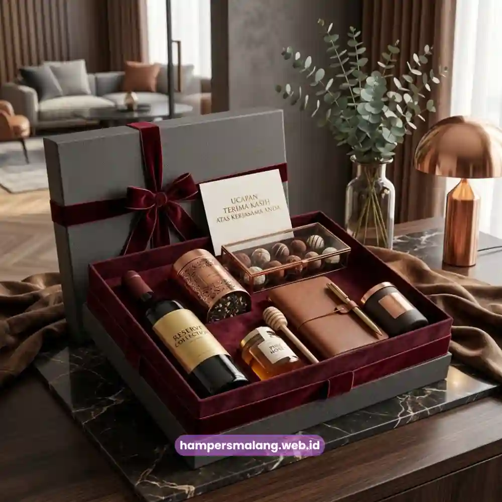
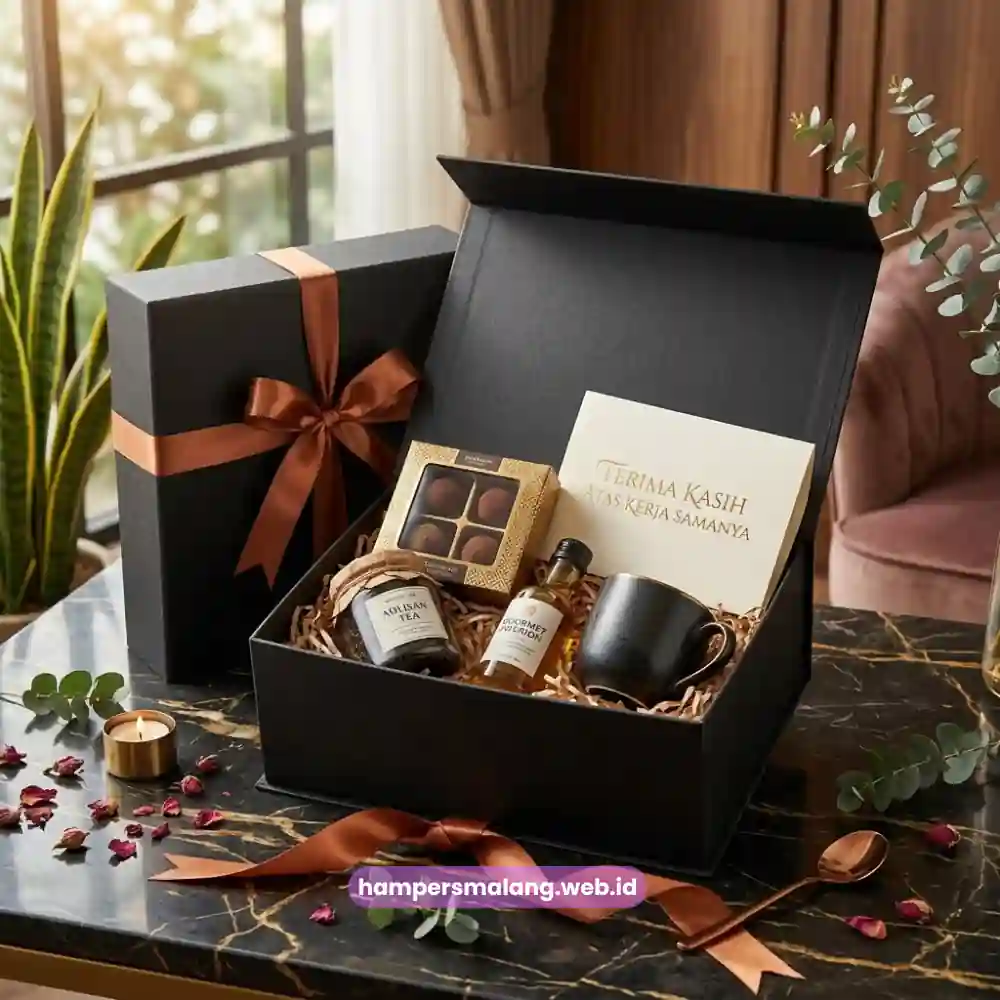

Bagaimana cara menyusun anggaran hampers klien agar tetap elegan tanpa membebani keuangan perusahaan?
Kuncinya terletak pada segmentasi klien berdasarkan prioritas hubungan bisnis dan pemilihan produk dengan rasio nilai yang tepat.
Selain itu, perencanaan jumlah pembelian secara strategis juga sangat krusial.
Dengan pendekatan ini, perusahaan tetap dapat menghadirkan hampers berkesan meski anggaran yang tersedia terbatas.
Banyak perusahaan menghadapi dilema antara keinginan memberikan hampers berkualitas tinggi dan keterbatasan anggaran yang dialokasikan untuk corporate gifting.
Padahal, kesan mewah pada sebuah hampers tidak selalu berbanding lurus dengan besarnya biaya yang dikeluarkan.
Melainkan lebih ditentukan oleh ketepatan strategi perencanaan dan eksekusi secara keseluruhan.
Mengapa Perencanaan Anggaran Hampers Perlu Dilakukan Sejak Awal?
Perencanaan anggaran yang dilakukan sejak awal periode memungkinkan perusahaan mengalokasikan dana secara proporsional.
Hal ini sangat penting untuk setiap momen pengiriman hampers sepanjang tahun.
Tanpa perencanaan yang matang, perusahaan berisiko mengeluarkan anggaran secara tidak merata.
Misalnya terlalu besar pada satu momen namun sangat terbatas pada momen penting lainnya.
Dengan menyusun anggaran tahunan yang mencakup seluruh momen strategis seperti hari raya, penyelesaian proyek, dan akhir tahun, perusahaan dapat menjaga konsistensi kualitas hampers.
Kualitas yang dikirimkan kepada klien sepanjang periode tersebut akan tetap terjaga dengan baik.
Dan tentunya tanpa harus mengorbankan kualitas pada momen-momen tertentu akibat keterbatasan dana yang tersisa.
Baca Juga: Strategi Anggaran Hampers Hari Raya Perusahaan agar Tetap Efisien
Bagaimana Segmentasi Klien Membantu Efisiensi Anggaran?
Segmentasi klien berdasarkan nilai kontrak, intensitas kerja sama, atau potensi bisnis ke depan dapat membantu perusahaan mengalokasikan anggaran hampers secara lebih efisien.
Klien dengan nilai kerja sama tinggi dapat dialokasikan anggaran hampers yang lebih besar.
Sementara klien dengan skala kerja sama lebih kecil tetap mendapatkan apresiasi melalui hampers dengan nilai yang proporsional.
Pendekatan segmentasi ini memastikan bahwa setiap klien tetap menerima bentuk apresiasi yang layak.
Tanpa membuat total anggaran corporate gifting membengkak akibat penyamarataan nilai hampers untuk seluruh klien.
Tentu hal ini dilakukan tanpa mempertimbangkan skala hubungan bisnis masing-masing pihak.
Apa Faktor yang Memengaruhi Rasio Nilai dan Kesan Mewah Hampers?
Kesan mewah pada hampers sering kali lebih dipengaruhi oleh kualitas penyajian dibandingkan jumlah atau harga produk di dalamnya.
Penyusunan yang rapi, pemilihan kemasan yang tepat, serta kombinasi produk yang terlihat harmonis dapat menciptakan kesan premium.
Hal tersebut dapat diwujudkan meski dengan anggaran yang relatif efisien sekalipun.
Sebuah laporan industri corporate gifting pada 2023 mencatat bahwa persepsi nilai sebuah hadiah bisnis lebih banyak dipengaruhi oleh aspek presentasi.
Presentasi dan personalisasi jauh lebih kuat pengaruhnya dibandingkan semata nominal harga produk yang digunakan.
Temuan ini menunjukkan bahwa strategi penyajian yang tepat dapat membantu perusahaan mengoptimalkan anggaran.
Namun tanpa mengorbankan kesan eksklusif dari hampers yang dikirimkan.
Bagaimana Menentukan Jumlah Produk yang Ideal dalam Satu Hampers?
Jumlah produk dalam satu hampers sebaiknya disesuaikan dengan konsep visual yang ingin ditampilkan, bukan semata mengejar kuantitas.
Hampers dengan jumlah produk yang lebih sedikit namun disusun secara rapi dan proporsional sering kali terlihat lebih elegan.
Hal ini jika dibandingkan dengan hampers dengan banyak produk namun tersusun secara padat dan kurang tertata.
Pendekatan minimalis dengan produk pilihan berkualitas tinggi dapat menjadi strategi efektif untuk menjaga anggaran tetap terkendali.
Sekaligus juga mempertahankan kesan premium yang diinginkan dalam setiap hampers yang dikirimkan kepada klien.

Bagaimana Menyeimbangkan Efisiensi Biaya dengan Kualitas Kemasan?
Kemasan tetap menjadi elemen yang tidak boleh dikorbankan sekalipun anggaran hampers dibatasi.
Karena kemasan berperan besar dalam membentuk kesan pertama sang penerima.
Perusahaan dapat mengalokasikan proporsi anggaran yang lebih besar untuk kemasan berkualitas.
Sementara efisiensi dilakukan pada aspek jumlah atau variasi produk di dalamnya.
Strategi ini memastikan bahwa meski anggaran terbatas, hampers tetap tampil profesional dan berkelas saat diterima oleh klien.
Karena kesan visual dari kemasan sering kali menjadi faktor pertama yang menentukan persepsi keseluruhan terhadap hampers tersebut.
Menyusun anggaran hampers klien yang efisien namun tetap berkesan membutuhkan perencanaan yang cermat dan pemahaman mengenai prioritas setiap momen pengiriman.
Hampers Malang siap membantu perusahaan Anda merancang paket hampers dengan berbagai pilihan anggaran, mulai dari kelas ekonomis hingga premium.
Tentu hal ini dilakukan tanpa mengorbankan kualitas dan kesan profesional yang ingin disampaikan kepada klien.
Tanya Jawab Seputar Anggaran Hampers
Bisa, selama penyajian, kemasan, dan pemilihan produk dilakukan secara tepat sehingga tetap menciptakan kesan premium meski dengan biaya yang efisien.
Anggaran untuk klien baru sebaiknya disesuaikan dengan potensi nilai kerja sama ke depan, dengan tetap mempertimbangkan kesan profesional sejak awal hubungan bisnis terjalin.
Tidak perlu, karena segmentasi anggaran berdasarkan skala hubungan bisnis justru membantu perusahaan mengalokasikan dana corporate gifting secara lebih efisien dan tepat sasaran.
Anggaran hampers klien yang efisien bukan berarti mengorbankan kesan elegan, melainkan tentang perencanaan yang tepat dalam segmentasi, penyajian, dan alokasi biaya pada elemen yang paling berdampak seperti kemasan.
Dengan strategi yang matang, perusahaan dapat menghadirkan hampers berkesan untuk seluruh klien tanpa membebani keuangan secara berlebihan.
Konsultasikan kebutuhan hampers klien dengan berbagai pilihan anggaran bersama Hampers Malang, mitra tepercaya untuk solusi corporate gifting yang elegan dan efisien.

Butuh Solusi Corporate Gifting?
Konsultasikan anggaran Anda bersama tim kami.
Ditulis oleh Tim Maroon Souvenir
Ahli dalam perancangan hampers dan corporate gift untuk perusahaan. Membantu klien memberikan kesan mendalam melalui hadiah berkualitas.